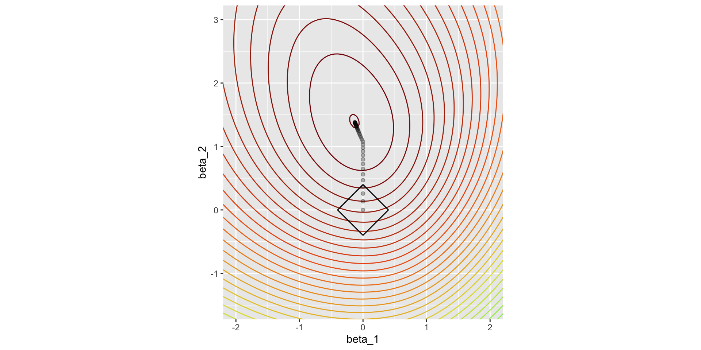
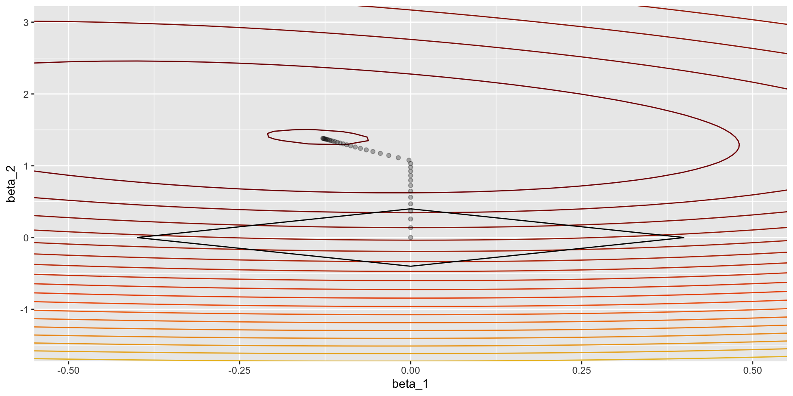

BIC
BICq equivalent for q in (0.000417890560228229, 0.989405669357382)
Best Model:
Estimate Std. Error z value Pr(>|z|)
(Intercept) -10.749495878 0.369191361 -29.116326 2.230782e-186
studentYes -0.714877620 0.147519010 -4.846003 1.259734e-06
balance 0.005738104 0.000231847 24.749526 3.136911e-135The Logistic Regression model - Model selection and assessment
M2 D3S/EGR 2025-2026
October 1, 2025
Outline
Outline
- Model selection
- Model assessment
- A short intro to Decision Trees
Model selection
Model selection
Disclaimer
This is a very short introduction to model selection in the context of Logisitc Regression.
For a better coverage, chapter 7 Model Assessment and Selection of Hastie et al. (2009) discusses in depth the interplay between bias, variance and model complexity, in a general setting. Chapter 6 Linear Model Selection and Regularization of James et al. (2021) discusses methods to automatically perform variable selection in the context of linear models.
Also more developed in the Practical part of the Course.
Model selection
Manual selection - the old way
Usually a combination of:
Single-variable analysis/screening: keep predictors showing individual association with the response
Correlation analysis: remove redundant predictors that are highly correlated
see for example this excellent blog post
Very similar to Exploratory Data Analysis.
Model selection
Best subset selection
The “best subset” method evaluates all possible combinations of predictor variables, resulting in \(2^p-1\) models for p predictors, and selects the one that optimizes a specified criterion, such as the Akaike Information Criterion (AIC) or Bayesian Information Criterion (BIC). It is computationally intensive and usually restricted to low dimension data sets:
\[ \begin{aligned} &1.\ \text{For } k = 1, \ldots, p: \\ &\quad (a)\ \text{Fit all } {p \choose k} \text{ models with exactly $k$ predictors} \\ &\quad (b)\ \text{Pick the best among them and call it } \mathcal{M}_k \\ &\quad\quad \text{(largest log-likelihood or min deviance for Logistic Regression)} \\ \\ &2.\ \text{Select the single best model from } \mathcal{M}_1, \ldots, \mathcal{M}_p \\ &\quad \text{using a chosen criterion (validation error, AIC, BIC, ...)} \end{aligned} \]
Model selection
Best subset - AIC / BIC
Given \(|\mathcal M|\) we define the two following criteria which represent two way of penalizing the log-likelihood \(\ell(Y,\hat\beta)\):
\[ \textrm{AIC}(\mathcal M)=-2\ell(Y,\hat\beta)+2|\mathcal M| \]
and
\[ \textrm{BIC}(\mathcal M)=-2\ell(Y,\hat\beta)+|\mathcal M|\log(n) \]
Model selection
Best subset - with R
The package bestglm allows best subset selection up to roughly \(15\) variables, by default it uses BIC. We use the Default data set to illustrate because Agriculture Farm Lending has around \(30\) variables:
Model selection
Stepwise Logistic Regression : Forward selection
Stepwise methods (Forward or Backward) iteratively add or remove variables based on a chosen criterion; once a variable is selected or dropped, it is fixed, and the process carries on, making them less computationally intensive than Best Subset selection. Below the Forward selection method:
\[ \begin{aligned} &1.\ \text{For } k = 1, \ldots, p: \\ &\quad (a)\ \text{Consider all } p+1-k \text{ models that augment the predictors in } \mathcal{M}_k \\ &\quad\quad \text{ with one additional predictor} \\ &\quad (b)\ \text{Pick the best among these } p+1-k \text{ models and call it } \mathcal{M}_{k+1} \\ &\quad\quad \text{(largest log-likelihood or min deviance for Logistic Regression)} \\ \\ &2.\ \text{Select the single best model from } \mathcal{M}_1, \ldots, \mathcal{M}_p \\ &\quad \text{using a chosen criterion (validation error, AIC, BIC, ...)} \end{aligned} \]
Model selection
Stepwise Logistic Regression : Backward selection
Below the Backward selection method:
\[ \begin{aligned} &1.\ \text{Let } \mathcal{M}_p \text{ denote the full model containing all $p$ predictors} \\ \\ &2.\ \text{For } k = p, \ldots, 1: \\ &\quad (a)\ \text{Consider all $k$ models that contain all but one of the predictors in } \mathcal{M}_k \text{ (total of $k-1$ predictors)} \\ &\quad (b)\ \text{Pick the best among these $k$ models and call it } \mathcal{M}_{k-1} \\ &\quad\quad \text{(largest log-likelihood or min deviance} \\ &\quad\quad \text{for Logistic Regression)} \\ \\ &3.\ \text{Select a single best model from } \mathcal{M}_1, \ldots, \mathcal{M}_p \\ &\quad \text{using a chosen criterion (validation error, AIC, BIC, ...)} \end{aligned} \]
Additionally versions mixing forward and backward stepwise selection exist.
Model selection
Penalized Logistic Regression
As an alternative, penalized regression techniques:
- fit a Logistic Regression model with all \(p\) predictors but introducing constraints/penalization on coefficients (ie shrink coefficients toward zero)
- turns out to be an efficient means of variance reduction and/or variable selection
To estimate Logistic Regression model, we maximized in \(\beta\) the log-likelihood:
\[ \ell(Y,\beta)=\log L(Y,\beta) =\sum_{i=1}^n \left(y_i \log(p_{\beta}(x_i))+(1-y_i) \log(1- p_{\beta}(x_i))\right) \]
In the context of penalized Logistic Regression the idea is to minimize in \(\beta\):
\[ -\ell(Y,\beta)+\lambda_2\lVert\beta\rVert_2 + \lambda_1\lVert\beta\rVert_1 \] where \(\lambda_1, \lambda_2\) are two constants.
Model selection
Penalized Logistic Regression
Having set \(\lambda_1, \lambda_2\), minimize in \(\beta\):
\[ -\ell(Y,\beta)+\lambda_2\lVert\beta\rVert_2 + \lambda_1\lVert\beta\rVert_1 \]
\(\lambda_1>0, \lambda_2=0\): Lasso penalty. Promotes sparsity, selects some predictors while shrinking others to zero.
\(\lambda_1=0, \lambda_2>0\): Ridge penalty.
\(\lambda_1>0, \lambda_2>0\): Elastic Net penalty.
Model selection
Penalized Logistic Regression
Usually the following graphs are given in textbooks/slides to give some intuition about Ridge/Lasso:
The figure below is taken from the original Lasso article by Tibshirani published in 1996. Without entering to much details, Ridge does a proportional shrinkage of all coefficients while Lasso tends to truncates some of the coefficients at zero.
Model selection
Penalized Logistic Regression
Re-using here the 2D Mixture data set from introduction slides to give further intuition about Ridge/Lasso penalties:
Model selection
Ridge
Ridge estimator is:
\[ \hat \beta_{ridge}=\underset{\beta}{\operatorname{argmin}}-\ell(Y,\beta)+\lambda\lVert\beta\rVert_2 \]
equivalently:
\[ \hat \beta_{ridge}=\underset{\beta}{\operatorname{argmin}}-\ell(Y,\beta) \]
subject to \(\lVert\beta\rVert_2 \leq t\), where \(t\) maps to \(\lambda\) (the higher \(\lambda\), the lower \(t\)).
Model selection
Ridge
Log-likelihood of the Logistic Regression (colored levels lines centered around the MLE) for the Mixture data set, adding the Ridge constraint (the circle in black is the boundary \(\lVert\beta\rVert_2 \leq t\)) :
Model selection
Ridge - with R
In R the package glmnet implements the Lasso, Ridge and Elastic Net penalties in particular for Logistic Regression. Ridge Logistic Regression coefficients for \(x_1\), \(x_2\) as a function of \(\lambda\):
Code
library(glmnet)
library(glmnetUtils) # convenient package allowing to use R formulas instead of glmnet sparse matrix
# Fitting Logistic Regression model with Ridge (alpha=0) penalty. Small lambda.min.ratio so that penalty is almost zero at start.
mixture_ridge <- glmnetUtils::glmnet(Y ~ ., data=data_mixture_example, family="binomial", alpha=0, lambda.min.ratio=0.000001)
# Extracting coefficients
ridge_result <- as_tibble(as.matrix(cbind(mixture_ridge$lambda, mixture_ridge$a0, t(mixture_ridge$beta))))
names(ridge_result) <- c("lambda", "(Intercept)", row.names(mixture_ridge$beta))
# Showing results for very high/low values of lambda
bind_rows(ridge_result %>% head(),ridge_result %>% tail())# A tibble: 12 × 4
lambda `(Intercept)` x1 x2
<dbl> <dbl> <dbl> <dbl>
1 268. -9.86e-32 -1.04e-37 2.64e-37
2 233. -5.00e- 4 -4.44e- 4 1.12e- 3
3 202. -5.75e- 4 -5.10e- 4 1.29e- 3
4 176. -6.61e- 4 -5.86e- 4 1.48e- 3
5 153. -7.59e- 4 -6.74e- 4 1.70e- 3
6 133. -8.73e- 4 -7.74e- 4 1.96e- 3
7 0.00287 -9.42e- 1 -1.38e- 1 1.36e+ 0
8 0.00250 -9.46e- 1 -1.37e- 1 1.36e+ 0
9 0.00217 -9.50e- 1 -1.37e- 1 1.37e+ 0
10 0.00189 -9.54e- 1 -1.37e- 1 1.37e+ 0
11 0.00164 -9.57e- 1 -1.36e- 1 1.37e+ 0
12 0.00143 -9.59e- 1 -1.36e- 1 1.38e+ 0Model selection
Ridge
Ridge Logistic Regression parameters \(\beta_1\), \(\beta_2\) path as \(\lambda\) increases. Starting from the Logistic Regression MLE for \(\lambda=0\) and then shrunken “uniformly” towards zero as \(\lambda\) increases.
Model selection
Lasso
Lasso Estimator is:
\[ \hat \beta_{lasso}=\underset{\beta}{\operatorname{argmin}}-\ell(Y,\beta)+\lambda\lVert\beta\rVert_1 \] equivalently::
\[ \hat \beta_{lasso}=\underset{\beta}{\operatorname{argmin}}-\ell(Y,\beta) \] subject to \(\lVert\beta\rVert_1 \leq t\), where \(t\) maps to \(\lambda\).
Model selection
Lasso
Log-likelihood of the Logistic Regression (colored levels lines centered around the MLE) for the Mixture data set, adding the Lasso constraint (the diamond/square in black is the boundary \(\lVert\beta\rVert_1 \leq t\)) :
Model selection
Lasso
Lasso Logistic Regression parameters for \(x_1\), \(x_2\) as a function of \(\lambda\):
Code
# Fitting Logistic Regression model with Lasso (alpha=1) penalty. Small lambda.min.ratio so that penalty is almost zero at start.
mixture_lasso <- glmnetUtils::glmnet(Y ~ ., data=data_mixture_example, family="binomial", alpha=1, lambda.min.ratio=0.000001)
# Extracting coefficients
lasso_result <- as_tibble(as.matrix(cbind(mixture_lasso$lambda, mixture_lasso$a0, t(mixture_lasso$beta))))
names(lasso_result) <- c("lambda", "(Intercept)", row.names(mixture_lasso$beta))
# Showing results for very high/low values of lambda
bind_rows(lasso_result %>% head(), lasso_result %>% tail())# A tibble: 12 × 4
lambda `(Intercept)` x1 x2
<dbl> <dbl> <dbl> <dbl>
1 0.268 -9.86e-32 0 0
2 0.233 -1.03e- 1 0 0.137
3 0.202 -1.96e- 1 0 0.258
4 0.176 -2.80e- 1 0 0.368
5 0.153 -3.57e- 1 0 0.469
6 0.133 -4.28e- 1 0 0.561
7 0.00354 -9.63e- 1 -0.122 1.37
8 0.00308 -9.65e- 1 -0.124 1.37
9 0.00268 -9.67e- 1 -0.125 1.37
10 0.00233 -9.68e- 1 -0.126 1.38
11 0.00202 -9.69e- 1 -0.127 1.38
12 0.00176 -9.70e- 1 -0.128 1.38 Model selection
Lasso
Lasso Logistic Regression parameters \(\beta_1\), \(\beta_2\) path as \(\lambda\) increases. Starting from the Logistic Regression MLE for \(\lambda=0\) and as \(\lambda\) increases and at some point the solution of the constrained optimization is likely to occur at one of the corners of the diamond.
Model selection
Lasso
Stretching the graph a little bit to better show the Lasso path, the \(\beta_1\) parameter is the first shrunk to zero:
Model selection
Penalized Logistic Regression
- Reminding the aim of statistical learning: which method leads to better prediction accuracy?
- In practice, the true set of relevant predictors is unknown: only a few vs many variables possibly correlated)
- Resampling methods are to compare models on a given dataset given some criterion and may be used to select a good value of penalization parameters \(\lambda\)
Model assessment
Model assessment
Resampling methods
Fig 5.7 from James et al. (2021)
Model assessment
Resampling methods
Fig 5.8 from James et al. (2021)
Model assessment
Original Mixture data set (d=1)
Tried to reproduce results form James et al. (2021) using Original Mixture data set with higher Bayes error
Model assessment
Original Mixture data set (d=2)
Model assessment
Original Mixture Mixture data set (d=3)
Model assessment
Original Mixture data set (d=4)
Model assessment
Original Mixture data set (d=5)
Model assessment
Original Mixture data set (d=6)
Model assessment
Original Mixture data set (d=7)
Model assessment
Original Mixture data set (d=8)
Model assessment
Original Mixture data set (d=10)
Model assessment
Original Mixture data set, misclassification curve
We plot below the misclassification curve, comparing the misclassification error estimated on a large testing set using the generating distribution (in orange, testing set generated knowing the oracle) with misclassification estimated using a resampling method on the training set (in black, 10-fold Cross Validation, defined later). In our case, we see that misclassification using a resampling method, although optimistic, behaves roughly like misclassification using large testing set:
Model assessment
The Hold-out approach
It consists in splitting the data set into:
- a learning or training set used to train the classifier or the Score ;
- a validation or test set used to estimate the empirical risk of the classifier or any other metric (ROC curve, AUC).
\[ \begin{aligned} &1.\ \text{Using a partition of the dataset } \mathcal{D} \text{ into training and validation sets } \{\mathcal{T}, \mathcal{V}\}: \\ &\quad (a)\ \text{Fit the classifiers } f_1, \dots, f_m \text{ on } \mathcal{T} \\ &\quad (b)\ \text{Compute the empirical risk on the validation set:} \\ &\quad\quad \hat{\mathrm{R}}(f) = \frac{1}{n_{\mathcal{V}}} \sum_i \ell(y_i, f_m(x_i)) \\ &\quad\quad \text{or any other chosen metric} \\ \\ &2.\ \text{Select the single best model } f_{m^*} \text{ with respect to the empirical risk or metric} \end{aligned} \]
Model assessment
The Hold-out approach
Fig 5.1 from James et al. (2021)
The main drawback using a single split of data is the possible variability of empirical risk, which is more pregnant when the data set size reduces. Against this issue an alternative approach is to repeat this process on multiple splits of the data.
Model assessment
The K-fold Cross-Validation approach
It consists in splitting randomly the data set into \(K\) blocks of folds then repeating \(K\) times the Hold-out approach, each time using a different block as validation set.
\[ \begin{aligned} &1.\ \text{Partition the dataset } \mathcal{D} \text{ randomly into } K \text{ blocks } \{\mathcal{D}_1, \dots, \mathcal{D}_K\} \\ \\ &2.\ \text{For } k = 1, \dots, K: \\ &\quad (a)\ \text{Define training and validation sets: } \mathcal{V}_k = \mathcal{D}_k, \ \mathcal{T}_k = \mathcal{D} \setminus \mathcal{D}_k \\ &\quad (b)\ \text{Fit the classifiers } f_1, \dots, f_m \text{ on } \mathcal{T}_k \\ &\quad (c)\ \text{Compute the empirical risk on the validation set:} \\ &\quad\quad \hat{\mathrm{R}}(f) = \frac{1}{n_{\mathcal{V}_k}} \sum_i \ell(y_i, f_m(x_i)) \\ &\quad\quad \text{or any other chosen metric} \\ \\ &3.\ \text{Select the single best model } f_{m^*} \text{ using the average empirical risk or metric} \end{aligned} \]
Model assessment
The K-fold Cross-Validation approach
Fig 5.5 from James et al. (2021)
Model assessment
The K-fold Cross-Validation approach
A variant is to first split the data set into a training and validation set. Perform K-fold Cross-Validation on the training set, for example to select some classifier hyper parameter (number of variables or model specification in logistic regression, penalty, etc), then assess the best “optimized” models on the validation set.
Another variant is to repeat the K-fold CV 5 or 10 times to improve the accuracy of the estimated performance and provide and estimate on its variability.
This book chapter gives a practical overview on these methods (how to implement it in R) and also gives references discussing their validity and limitations.
This recent blog by NVIDIA Kaggle grandmasters advocates resampling techniques (cross-validation) as a foundation for any supervized learning problem.
A short intro to Decision Trees
A short intro to Decision Trees
Mixture data set: Logistic Regression

The empirical risk on testing set is 0.291.
A short intro to Decision Trees
Toy example - Logistic Regression - binning
The empirical risk on testing set is 0.265.
A short intro to Decision Trees
Toy example - Decision Trees
The empirical risk on testing set is 0.247.
A short intro to Decision Trees
Scoring Toy example - Decision Trees
We show below the previously fitted Decision tree:
How to fit such a tree? What criterion is used?
A short intro to Decision Trees
Trees Terminology
Decision trees recursively partition the data by applying specific cutoff values to the features. This process creates various subsets of the data set, with each data point belonging to one of these subsets. The final subsets are known as Terminal or Leaf nodes, while the intermediate ones are referred to as Internal, Split or Decision nodes.

A short intro to Decision Trees
CART
Classification And Regression Tree (CART) (Breiman et al. (1983)), is a recursive method:
At the root of the tree we find the entire sample.
Each node of the tree divides the sample into 2 branches, according to a feature variable (discrete, continuous or ordinal variable (threshold) or a nominal variable (set of categories)).
A terminal node is called a leaf. Usually the tree is represented upside down with its root at the top
The tree is built by the following process:
- First find the single variable which ‘best’ splits the data into two groups (‘best’ will be defined later).
- The data is separated, and then this process is applied separately to each sub-group, and so on recursively until a stopping rule occurs (either no improvement can be made or the subgroups reach a minimum size).
Decision Trees
CART for Mixture data set
A short intro to Decision Trees
CART for Mixture data set
Starting from the top of the tree and going down the CART/rpart algorithm splits at each node according to a binary decision.
It ends up splitting the space into six regions, and then models the output by the mode/majority (classification) or proportion (scoring/probability) of \(Y\) in each region:

A short intro to Decision Trees
CART for Mixture data set
For example, with the Mixture data, CART/rpart first splits at \(x_2=s_1=0.14\):
A short intro to Decision Trees
CART for Mixture data set
Then, the region \(x_2 \geq s_1\) is split at \(x_1 = s_2 = 2.2\):
A short intro to Decision Trees
CART for Mixture data set
Then, the region \(x_2 \geq s_1, \mbox{ } x_1 > s_2\) is split at \(x_1 = s_3 = 3.1\):
A short intro to Decision Trees
CART for Mixture data set
And the region \(x_2 \geq s_1, \mbox{ } x_1 \leq s_2\) is split at \(x_2 = s_4 = 0.98\):
A short intro to Decision Trees
CART for Mixture data set
Finally the region \(x_2 \geq s_1, \mbox{ } x_1 \leq s_2, \mbox{ } x_2 < s_4\) is split at \(x_1 = s_5 = 1\). Resulting in \(R_1, R_2, . . . , R_6\) shown below:
Decision Trees
Splitting criterion
In order to classify well the data, CART seeks as much as possible to obtain pure leaf nodes (i.e. high probability for one class).
At each step CART selects a predictor \(X_j\) and a split-point \(s\) such that splitting the current region \(\mathcal R\) into the regions \(\mathcal R_L(j,s)=\{X|Xj < s\}\) and \(\mathcal R_R(j,s)=\{X|Xj ≥ s\}\) leads to the greatest possible reduction in a well chosen measure of impurity.
Given a leaf node \(m\) representing a region \(R_m\) containing \(n_m\) observations we denote \(\mathcal I_m\) a measure of node impurity, three measures are usually retained:
the misclassification error: \(\mathcal I_m =\frac{1}{n_m}\sum_{x_i \in R_m}\mathbb{1}_{y_i\neq \hat C_m}= 1-\hat p^m_{\hat C_m}=1-\max(\hat p^m, 1-\hat p^m)\) the fraction of observations in the region that do not belong to the most common class
the Gini index: \(\mathcal I_m=\sum_{k}\hat p^m_{k}(1-\hat p^m_{k})=2\hat p^m(1-\hat p^m)\)
the cross-entropy or deviance: \(\mathcal I_m=-\sum_{k} \hat p^m_{k}\log(1-\hat p^m_{k})=-\hat p^m\log(\hat p^m)- (1-\hat p^m)\log(1-\hat p^m)\)
where we have denoted \(\hat p^m=\hat p^m_{1}=1-\hat p^m_{0}\)
A short intro to Decision Trees
Impurity measures
A short intro to Decision Trees
A split example
# A tibble: 1 × 6
feature_split split_rule imp_left imp_right imp_total imp_node
<chr> <dbl> <dbl> <dbl> <dbl> <dbl>
1 x2 0.151 0.142 0.456 0.374 0.5References
Breiman, L., Friedman, J. H., Olshen, R. A., & Stone, C. J. and. (1983). Classification and regression trees. Wadsworth.
Hastie, T., Tibshirani, R., & Friedman, J. (2009). The elements of statistical learning. Springer New York. https://doi.org/10.1007/978-0-387-84858-7
James, G., Witten, D., Hastie, T., & Tibshirani, R. (2021). An introduction to statistical learning: With applications in r. Springer US. https://doi.org/10.1007/978-1-0716-1418